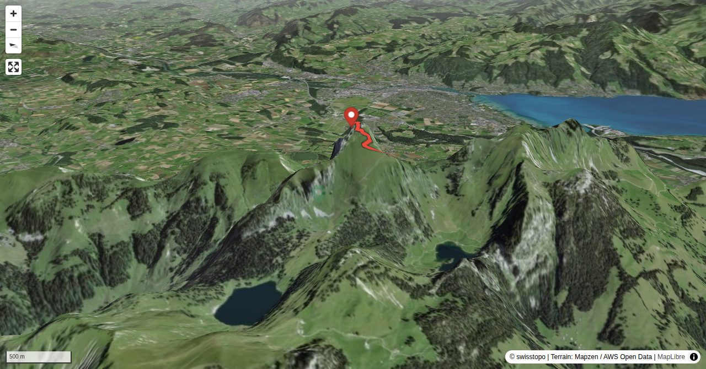

Der Aufstieg über steilen Gras- und Felsbänder in der Nordseite zwischen Stock- und Solhorn bietet eine spannende, ausgesetzte und recht anspruchsvolle Aufstiegsvariante auf den Thuner Hausberg. Woher der Name «Judengasse»? Gemäss kurzer Recherche kam der Name folgendermassen zustande. Früher mussten die Einwohner von Oberstocken im betreffenden Gebiet immer wieder Steinschlagtrümmer und Lawinenschutt wegräumen. Noch Anfangs 1930 arbeiteten sie sechs Tage in der Woche und hatten für diese Arbeit nur am Sonntag Zeit. Da Juden ihre Arbeitswoche jeweils nach dem Sabbat (Samstag) am christlichen Sonntag wieder beginnen, nannten die Einwohner das Gebiet ihrer sonntäglichen Arbeit «Judengasse». Erstbegeher: Warscheinlich das Ehepaar Montandon und Robert von Wyss, 20. November 1898.
Bernhard Senn is a physiotherapist specializing in workplace ergonomics and workplace health promotion. Bernhard has been an SAC author since 2013 and will often be found 'out and about' in the mountains; whether with rock gear, skis, mountain bike or paraglider.
Quick Facts
| Summit elevation | 2190 m |
|---|---|
| Difficulty | SAC T6 Difficult alpine hiking close to mountaineering terrain. Guide |
| Trailhead | Oberstocken BE |
| Distance | 6.8 km (out-and-back) |
| Total ascent | ~1497 m |
| Elevation range | 693-2189 m |
| Route sources | SAC Route Portal |
Photos


Route Map & Elevation
i
i
sac_scale (precise T1–T6) with
swissTLM3D Wanderwegart
fallback where OSM is silent (coarser T2/T3 and T4+ buckets).
Coverage: OSM 89.3% · swisstopo 0.0% · unknown 9.2%.Elevations computed from the inlined GPX track (SwissTopo height API).
Loading forecast…
3D Terrain View

Route Details
Von Nordosten durch die «Judengasse»
- TODO: Step 1 description.
- TODO: Step 2 description.
Terrain & safety
Bei Nässe heikel. Ein Pickel kann nützliche Dienste erweisen.
Source: SAC Route Portal
Getting There & Back
Start: Oberstocken BE (693 m)
Directions from to Oberstocken BE
Route returns to Oberstocken BE.
Field Reference
| Trailhead | Oberstocken BE | 46.71750, 7.55380 |
|---|---|---|
| Summit | Stockhorn Be (2190 m) | 46.69399, 7.53729 |
Coordinates are WGS84 decimal degrees (lat, lon). Emergency: 112 (general) or 1414 (Rega air rescue). Page URL: